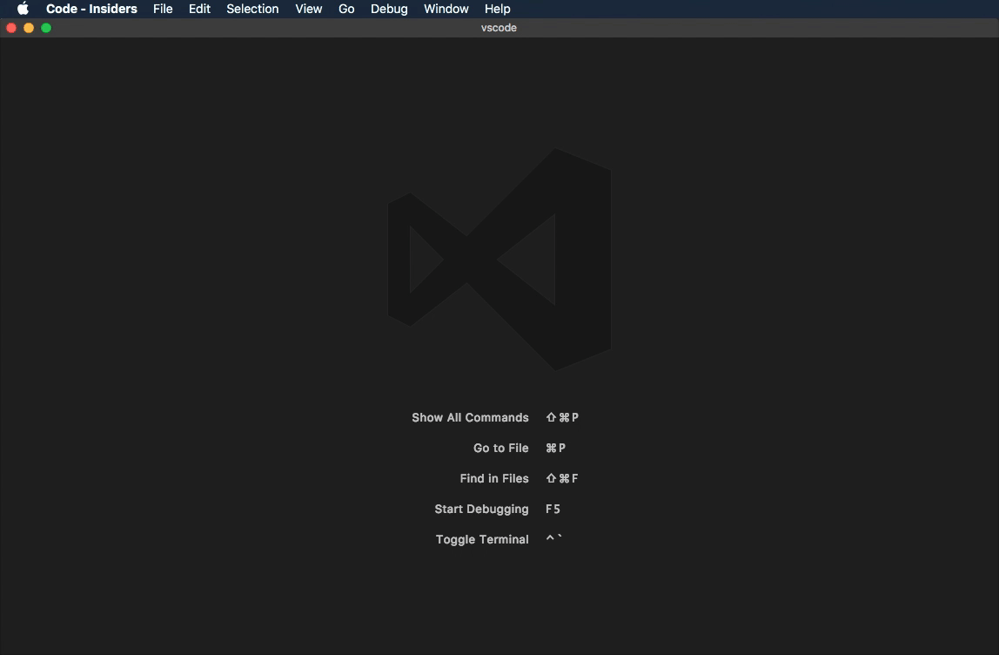
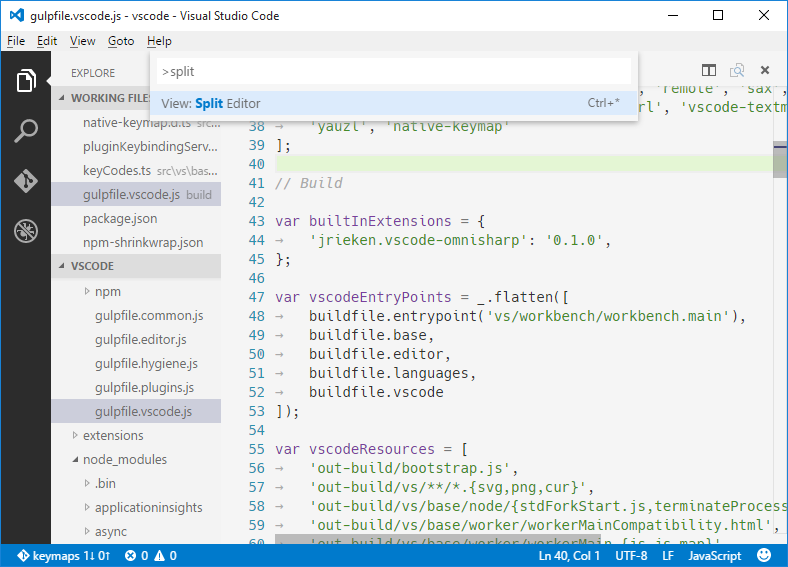
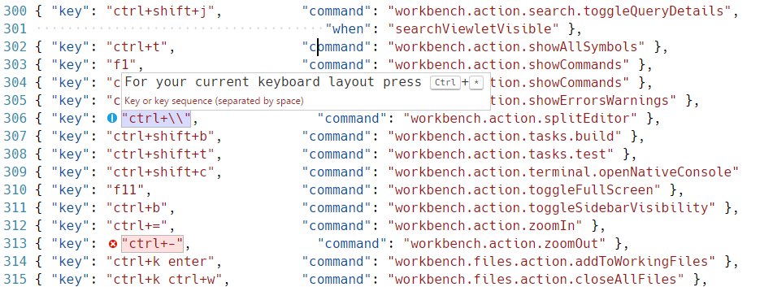

Visual Studio Codeでは、ほとんどのタスクをキーボードから直接実行することが可能です。このページではデフォルトのバインディング(キーボードショートカット)とその更新方法を説明します。
Note: このページではアクセスしたプラットフォームのキーを表示します。他のプラットフォームを表示したい場合はマウスホバーしてください。
エディターのキーボードショートカット
Visual Studio Codeはキーボードショートカットエディターを使用して、豊富で簡単なキーボードショートカットの編集ができます。これはキーバインドの有無にかかわらず使用可能なすべてのコマンドを一覧表示して、使用可能なアクションを使用してキーバインドを簡単に変更/削除/リセットできます。また上部には、コマンドやキーバインドの検索に役立つ検索窓があります。 ファイル(Code) > 基本設定 > キーボード ショートカットに移動してキーボードショートカットを構成します。

ここで最も重要なのは、キーボードレイアウトに合わせてキーバインドを確認できることです。例えばドイツ語に変更された場合、USレイアウトで表されるcmd+\キーはctrl+shift+alt+cmd+7と表します。キーバインドを入力するダイアログでは、キーボードレイアウトごとに正しいキーボードバインドを割り当てます。
高度なカスタマイズをするにはAdvanced Customizationsを参照してください。
キーマップの拡張機能
キーボード ショートカットは生産性にとって不可欠です。ですがキーボードの習慣を変えるのは難しいものです。この問題に対処するために ファイル > 基本設定 > キーマップ拡張機能では、一般的なキーマップ拡張機能のリストを用意しています。これら拡張機能は、VS Codeのショートカットを他のエディタのショートカットと一致するように変更できるので、新しいキーボードショートカットを習得する必要はありません。MarketplaceでKeymaps category をより詳細に確認してください。
キーボード ショートカットの参照
印刷可能なキーボードショートカットリストを用意しています。ヘルプ > キーボード ショートカットの参照で印刷に最適化されたPDFバージョンを表示します。
各プラットホーム別のリンクは次の通りです:
Default Keyboard Shortcuts
Note: 次のキーは標準のUSキーボードを想定してレンタリングしています。異なったキーボードレイアウトを使用する場合はここを参照してください。
基本編集
(※VS Code i18nから引用し対応していない場合英文のままです
| Key | Command | Command id |
|---|---|---|
| ⌘X (Windows, Linux Ctrl+X) | 切り取り | editor.action.clipboardCutAction |
| ⌘C (Windows, Linux Ctrl+C) | コピー | editor.action.clipboardCopyAction |
| ⇧⌘K (Windows, Linux Ctrl+Shift+K) | 行の削除 | editor.action.deleteLines |
| ⌘Enter (Windows, Linux Ctrl+Enter) | 行を下に挿入 | editor.action.insertLineAfter |
| ⇧⌘Enter (Windows, Linux Ctrl+Shift+Enter) | 行を上に挿入 | editor.action.insertLineBefore |
| ⌥↓ (Windows, Linux Alt+Down) | 行を下へ移動 | editor.action.moveLinesDownAction |
| ⌥↑ (Windows, Linux Alt+Up) | 行を上へ移動 | editor.action.moveLinesUpAction |
| ⇧⌥↓ (Windows Shift+Alt+Down, Linux Ctrl+Shift+Alt+Down) | 行を下へコピー | editor.action.copyLinesDownAction |
| ⇧⌥↑ (Windows Shift+Alt+Up, Linux Ctrl+Shift+Alt+Up) | 行を上へコピー | editor.action.copyLinesUpAction |
| ⌘D (Windows, Linux Ctrl+D) | 選択した項目を次の一致項目に追加 | editor.action.addSelectionToNextFindMatch |
| ⌘K ⌘D (Windows, Linux Ctrl+K Ctrl+D) | 最後に選択した項目を次の一致項目に移動 | editor.action.moveSelectionToNextFindMatch |
| ⌘U (Windows, Linux Ctrl+U) | Undo last cursor operation | cursorUndo |
| ⇧⌥I (Windows, Linux Shift+Alt+I) | 選択した行から複数のカーソルを作成 | editor.action.insertCursorAtEndOfEachLineSelected |
| ⇧⌘L (Windows, Linux Ctrl+Shift+L) | 一致するすべての出現箇所を選択します | editor.action.selectHighlights |
| ⌘F2 (Windows, Linux Ctrl+F2) | すべての出現箇所を変更 | editor.action.changeAll |
| ⌘I (Windows, Linux Ctrl+I) | Select current line | expandLineSelection |
| ⌥⌘↓ (Windows Ctrl+Alt+Down, Linux Shift+Alt+Down) | カーソルを下に挿入 | editor.action.insertCursorBelow |
| ⌥⌘↑ (Windows Ctrl+Alt+Up, Linux Shift+Alt+Up) | カーソルを上に挿入 | editor.action.insertCursorAbove |
| ⇧⌘\ (Windows, Linux Ctrl+Shift+\) | ブラケットへ移動 | editor.action.jumpToBracket |
| ⌘] (Windows, Linux Ctrl+]) | 行のインデント | editor.action.indentLines |
| ⌘[ (Windows, Linux Ctrl+[) | 行のインデント解除 | editor.action.outdentLines |
| Home | Go to Beginning of Line | cursorHome |
| End | Go to End of Line | cursorEnd |
| ⌘↓ (Windows, Linux Ctrl+End) | Go to End of File | cursorBottom |
| ⌘↑ (Windows, Linux Ctrl+Home) | Go to Beginning of File | cursorTop |
| ⌃PageDown (Windows, Linux Ctrl+Down) | Scroll Line Down | scrollLineDown |
| ⌃PageUp (Windows, Linux Ctrl+Up) | Scroll Line Up | scrollLineUp |
| ⌘PageDown (Windows, Linux Alt+PageDown) | Scroll Page Down | scrollPageDown |
| ⌘PageUp (Windows, Linux Alt+PageUp) | Scroll Page Up | scrollPageUp |
| ⌥⌘[ (Windows, Linux Ctrl+Shift+[) | 折りたたみ | editor.fold |
| ⌥⌘] (Windows, Linux Ctrl+Shift+]) | 展開 | editor.unfold |
| ⌘K ⌘[ (Windows, Linux Ctrl+K Ctrl+[) | 再帰的に折りたたむ | editor.foldRecursively |
| ⌘K ⌘] (Windows, Linux Ctrl+K Ctrl+]) | 再帰的に展開する | editor.unfoldRecursively |
| ⌘K ⌘0 (Windows, Linux Ctrl+K Ctrl+0) | 全て折りたたみ | editor.foldAll |
| ⌘K ⌘J (Windows, Linux Ctrl+K Ctrl+J) | すべて展開 | editor.unfoldAll |
| ⌘K ⌘C (Windows, Linux Ctrl+K Ctrl+C) | 行コメントの追加 | editor.action.addCommentLine |
| ⌘K ⌘U (Windows, Linux Ctrl+K Ctrl+U) | 行コメントの削除 | editor.action.removeCommentLine |
| ⌘/ (Windows, Linux Ctrl+/) | 行コメントの切り替え | editor.action.commentLine |
| ⇧⌥A (Windows Shift+Alt+A, Linux Ctrl+Shift+A) | ブロック コメントの切り替え | editor.action.blockComment |
| ⌘F (Windows, Linux Ctrl+F) | 検索 | actions.find |
| ⌥⌘F (Windows, Linux Ctrl+H) | 置換 | editor.action.startFindReplaceAction |
| ⌘G (Windows, Linux F3) | 次を検索 | editor.action.nextMatchFindAction |
| ⇧⌘G (Windows, Linux Shift+F3) | 前を検索 | editor.action.previousMatchFindAction |
| ⌥Enter (Windows, Linux Alt+Enter) | Select All Occurrences of Find Match | editor.action.selectAllMatches |
| ⌥⌘C (Windows, Linux Alt+C) | Toggle Find Case Sensitive | toggleFindCaseSensitive |
| ⌥⌘R (Windows, Linux Alt+R) | Toggle Find Regex | toggleFindRegex |
| ⌥⌘W (Windows, Linux Alt+W) | Toggle Find Whole Word | toggleFindWholeWord |
| ⌃⇧M (Windows, Linux Ctrl+M) | Tabキーを切り替えるとフォーカスが移動します | editor.action.toggleTabFocusMode |
| 空白文字の表示の切り替え | toggleRenderWhitespace | |
| ⌥Z (Windows, Linux Alt+Z) | Toggle Word Wrap | editor.action.toggleWordWrap |
言語編集
| Key | Command | Command id |
|---|---|---|
| ⌃Space (Windows, Linux Ctrl+Space) | 候補をトリガー | editor.action.triggerSuggest |
| ⇧⌘Space (Windows, Linux Ctrl+Shift+Space) | パラメーター ヒントをトリーが | editor.action.triggerParameterHints |
| ⇧⌥F (Windows Shift+Alt+F, Linux Ctrl+Shift+I) | Format Document | editor.action.formatDocument |
| ⌘K ⌘F (Windows, Linux Ctrl+K Ctrl+F) | Format Selection | editor.action.formatSelection |
| F12 | 定義へ移動 | editor.action.goToDeclaration |
| ⌘K ⌘I (Windows, Linux Ctrl+K Ctrl+I) | ホバーの表示 | editor.action.showHover |
| ⌥F12 (Windows Alt+F12, Linux Ctrl+Shift+F10) | 定義をここに表示 | editor.action.previewDeclaration |
| ⌘K F12 (Windows, Linux Ctrl+K F12) | 定義を横に開く | editor.action.openDeclarationToTheSide |
| ⌘. (Windows, Linux Ctrl+.) | クイック修正 | editor.action.quickFix |
| ⇧F12 (Windows, Linux Shift+F12) | すべての参照の検索 | editor.action.referenceSearch.trigger |
| F2 | シンボルの名前を変更 | editor.action.rename |
| ⇧⌘. (Windows Ctrl+Shift+., Linux Ctrl+Shift+[intlbackslash]) | 次の値に置換 | editor.action.inPlaceReplace.down |
| ⇧⌘, (Windows Ctrl+Shift+,, Linux Ctrl+[intlbackslash]) | 前の値に置換 | editor.action.inPlaceReplace.up |
| ⌃⇧⌘→ (Windows, Linux Shift+Alt+Right) | 選択範囲を拡大 | editor.action.smartSelect.grow |
| ⌃⇧⌘← (Windows, Linux Shift+Alt+Left) | 選択範囲を縮小 | editor.action.smartSelect.shrink |
| ⌘K ⌘X (Windows, Linux Ctrl+K Ctrl+X) | 末尾の空白のトリミング | editor.action.trimTrailingWhitespace |
| ⌘K M (Windows, Linux Ctrl+K M) | 言語モードの変更 | workbench.action.editor.changeLanguageMode |
ナビゲーション
| Key | Command | Command id |
|---|---|---|
| ⌘T (Windows, Linux Ctrl+T) | ワークスペース内のシンボルへ移動 | workbench.action.showAllSymbols |
| ⌃G (Windows, Linux Ctrl+G) | 指定行へ移動… | workbench.action.gotoLine |
| ⌘P (Windows, Linux Ctrl+P) | ファイルに移動… | workbench.action.quickOpen |
| ⇧⌘O (Windows, Linux Ctrl+Shift+O) | ファイル内シンボルへ移動… | workbench.action.gotoSymbol |
| ⇧⌘M (Windows, Linux Ctrl+Shift+M) | 問題を表示する | workbench.actions.view.problems |
| F8 | 次のエラーまたは警告へ移動 | editor.action.marker.next |
| ⇧F8 (Windows, Linux Shift+F8) | 前のエラーまたは警告へ移動 | editor.action.marker.prev |
| ⇧⌘P (Windows, Linux Ctrl+Shift+P) | すべてのコマンドの表示 | workbench.action.showCommands |
| ⌃⇧Tab (Windows, Linux Ctrl+Shift+Tab) | グループ内の最近使用したエディターのうち前のエディターを開く | workbench.action.openPreviousRecentlyUsedEditorInGroup |
| ⌃- (Windows Alt+Left, Linux Ctrl+Alt+-) | 前に戻る | workbench.action.navigateBack |
| ⌃⇧- (Windows Alt+Right, Linux Ctrl+Shift+-) | 次に進む | workbench.action.navigateForward |
エディター/ウィンドウ管理
| Key | Command | Command id |
|---|---|---|
| ⇧⌘N (Windows, Linux Ctrl+Shift+N) | 新しいウィンドウ | workbench.action.newWindow |
| ⇧⌘W (Windows Ctrl+W, Linux Ctrl+Shift+W) | ウィンドウを閉じる | workbench.action.closeWindow |
| ⌘W (Windows Ctrl+F4, Linux Ctrl+W) | エディターを閉じる | workbench.action.closeActiveEditor |
| ⌘K F (Windows, Linux Ctrl+K F) | フォルダーを閉じる | workbench.action.closeFolder |
| エディター グループ間で移動する | workbench.action.navigateEditorGroups | |
| ⌘\ (Windows, Linux Ctrl+\) | エディターの分割 | workbench.action.splitEditor |
| ⌘1 (Windows, Linux Ctrl+1) | 1番目のエディター グループにフォーカス | workbench.action.focusFirstEditorGroup |
| ⌘2 (Windows, Linux Ctrl+2) | 2番目のエディター グループにフォーカス | workbench.action.focusSecondEditorGroup |
| ⌘3 (Windows, Linux Ctrl+3) | 3番目のエディター グループにフォーカス | workbench.action.focusThirdEditorGroup |
| ⌘K ⌘← (Windows, Linux Ctrl+K Ctrl+Left) | 前のグループにフォーカス | workbench.action.focusPreviousGroup |
| ⌘K ⌘→ (Windows, Linux Ctrl+K Ctrl+Right) | 次のグループにフォーカス | workbench.action.focusNextGroup |
| ⌘K ⇧⌘← (Windows, Linux Ctrl+Shift+PageUp) | エディターを左へ移動 | workbench.action.moveEditorLeftInGroup |
| ⌘K ⇧⌘→ (Windows, Linux Ctrl+Shift+PageDown) | エディターを右へ移動 | workbench.action.moveEditorRightInGroup |
| ⌘K ← (Windows, Linux Ctrl+K Left) | エディター グループを左側に移動する | workbench.action.moveActiveEditorGroupLeft |
| ⌘K → (Windows, Linux Ctrl+K Right) | エディター グループを右側に移動する | workbench.action.moveActiveEditorGroupRight |
ファイル管理
| Key | Command | Command id |
|---|---|---|
| ⌘N (Windows, Linux Ctrl+N) | 無題の新規ファイル | workbench.action.files.newUntitledFile |
| Ctrl+O | ファイルを開く… | workbench.action.files.openFile |
| ⌘S (Windows, Linux Ctrl+S) | 保存 | workbench.action.files.save |
| ⌥⌘S (Windows Ctrl+K S, Linux ) | すべて保存 | workbench.action.files.saveAll |
| ⇧⌘S (Windows, Linux Ctrl+Shift+S) | 名前を付けて保存… | workbench.action.files.saveAs |
| ⌘W (Windows Ctrl+F4, Linux Ctrl+W) | エディターを閉じる | workbench.action.closeActiveEditor |
| ⌥⌘T (Windows, Linux ) | その他のエディターを閉じる | workbench.action.closeOtherEditors |
| ⌘K W (Windows, Linux Ctrl+K W) | グループ内のすべてのエディターを閉じる | workbench.action.closeEditorsInGroup |
| 他のグループ内のエディターを閉じる | workbench.action.closeEditorsInOtherGroups | |
| 左側のエディターを閉じる | workbench.action.closeEditorsToTheLeft | |
| 右側のエディターを閉じる | workbench.action.closeEditorsToTheRight | |
| ⌘K ⌘W (Windows, Linux Ctrl+K Ctrl+W) | すべてのエディターを閉じる | workbench.action.closeAllEditors |
| ⇧⌘T (Windows, Linux Ctrl+Shift+T) | 閉じたエディターを再度開く | workbench.action.reopenClosedEditor |
| ⌘K Enter (Windows, Linux Ctrl+K Enter) | エディターを保持 | workbench.action.keepEditor |
| ⌃Tab (Windows, Linux Ctrl+Tab) | グループ内の最近使用したエディターのうち次のエディターを開く | workbench.action.openNextRecentlyUsedEditorInGroup |
| ⌃⇧Tab (Windows, Linux Ctrl+Shift+Tab) | グループ内の最近使用したエディターのうち前のエディターを開く | workbench.action.openPreviousRecentlyUsedEditorInGroup |
| ⌘K P (Windows, Linux Ctrl+K P) | アクティブ ファイルのパスのコピー | workbench.action.files.copyPathOfActiveFile |
| ⌘K R (Windows, Linux Ctrl+K R) | Windowsエクスプローラーでアクティブファイルを表示する | workbench.action.files.revealActiveFileInWindows |
| ⌘K O (Windows, Linux Ctrl+K O) | 新しいウィンドウでアクティブ ファイルを開く | workbench.action.files.showOpenedFileInNewWindow |
| アクティブ ファイルを比較 | workbench.files.action.compareFileWith |
表示
| Key | Command | Command id |
|---|---|---|
| ⌃⌘F (Windows, Linux F11) | 全画面表示の切り替え | workbench.action.toggleFullScreen |
| ⌘K Z (Windows, Linux Ctrl+K Z) | Zen Modeの切り替え | workbench.action.toggleZenMode |
| Escape Escape | Leave Zen Mode | workbench.action.exitZenMode |
| ⌘= (Windows, Linux Ctrl+=) | 拡大 | workbench.action.zoomIn |
| ⌘- (Windows, Linux Ctrl+-) | 縮小 | workbench.action.zoomOut |
| ⌘Numpad0 (Windows, Linux Ctrl+Numpad0) | ズームのリセット | workbench.action.zoomReset |
| ⌘B (Windows, Linux Ctrl+B) | サイドバーの表示の切り替え | workbench.action.toggleSidebarVisibility |
| ⇧⌘E (Windows, Linux Ctrl+Shift+E) | エクスプローラーを表示 | workbench.view.explorer |
| ⇧⌘D (Windows, Linux Ctrl+Shift+D) | デバッグの表示 | workbench.view.debug |
| ⌃⇧G (Windows, Linux Ctrl+Shift+G) | ソース管理を表示 | workbench.view.scm |
| ⇧⌘X (Windows, Linux Ctrl+Shift+X) | 拡張機能を表示する | workbench.view.extensions |
| ⇧⌘U (Windows Ctrl+Shift+U, Linux Ctrl+K Ctrl+H) | 出力の切り替え | workbench.action.output.toggleOutput |
| ⌃Q (Windows Ctrl+Q, Linux ) | Quick Openビュー | workbench.action.quickOpenView |
| ⇧⌘F (Windows, Linux Ctrl+Shift+F) | 検索の表示 | workbench.view.search |
| ⇧⌘H (Windows, Linux Ctrl+Shift+H) | 複数のファイルで置換 | workbench.action.replaceInFiles |
| ⇧⌘J (Windows, Linux Ctrl+Shift+J) | Toggle Search Details | workbench.action.search.toggleQueryDetails |
| ⇧⌘C (Windows, Linux Ctrl+Shift+C) | 新しいコマンドプロントを開く | workbench.action.terminal.openNativeConsole |
| ⇧⌘V (Windows, Linux Ctrl+Shift+V) | Toggle Markdown Preview | markdown.showPreview |
| ⌘K V (Windows, Linux Ctrl+K V) | Open Preview to the Side | markdown.showPreviewToSide |
| ⌃` (Windows, Linux Ctrl+`) | 統合端末の切り替え | workbench.action.terminal.toggleTerminal |
基本設定
| Key | Command | Command id |
|---|---|---|
| ⌘, (Windows, Linux Ctrl+,) | ユーザー設定を開く | workbench.action.openGlobalSettings |
| ワークスペース設定を開く | workbench.action.openWorkspaceSettings | |
| ⌘K ⌘S (Windows, Linux Ctrl+K Ctrl+S) | キーボード ショートカットを開く | workbench.action.openGlobalKeybindings |
| ユーザー スニペットを開く | workbench.action.openSnippets | |
| ⌘K ⌘T (Windows, Linux Ctrl+K Ctrl+T) | 配色テーマ | workbench.action.selectTheme |
| 言語を構成する | workbench.action.configureLocale |
デバッグ
| Key | Command | Command id |
|---|---|---|
| F9 | ブレークポイントの切り替え | editor.debug.action.toggleBreakpoint |
| F5 | デバッグの開始 | workbench.action.debug.start |
| F5 | 続行 | workbench.action.debug.continue |
| ⌘F5 (Windows, Linux Ctrl+F5) | デバッグなしで開始 | workbench.action.debug.run |
| F6 | 一時停止 | workbench.action.debug.pause |
| F11 | ステップ インする | workbench.action.debug.stepInto |
| ⇧F11 (Windows, Linux Shift+F11) | ステップ アウト | workbench.action.debug.stepOut |
| F10 | ステップ オーバー | workbench.action.debug.stepOver |
| ⇧F5 (Windows, Linux Shift+F5) | 停止 | workbench.action.debug.stop |
| ⌘K ⌘I (Windows, Linux Ctrl+K Ctrl+I) | ホバーの表示 | editor.debug.action.showDebugHover |
タスク
| Key | Command | Command id |
|---|---|---|
| ⇧⌘B (Windows, Linux Ctrl+Shift+B) | Run Build Task | workbench.action.tasks.build |
| Run Test Task | workbench.action.tasks.test |
拡張機能
| Key | Command | Command id |
|---|---|---|
| 拡張機能のインストール | workbench.extensions.action.installExtension | |
| インストール済みの拡張機能の表示 | workbench.extensions.action.showInstalledExtensions | |
| 古くなった拡張機能の表示 | workbench.extensions.action.listOutdatedExtensions | |
| お勧めの拡張機能を表示 | workbench.extensions.action.showRecommendedExtensions | |
| 人気の拡張機能の表示 | workbench.extensions.action.showPopularExtensions | |
| すべての拡張機能を更新します | workbench.extensions.action.updateAllExtensions |
高度なカスタマイズ
VS Code内すべてのキーボードショートカットはkeybindings.jsonファイルでカスタマイズすることができます。
- キーボードショートカットをで設定するには、Keyboard Shortcutsエディターを開き、
keybindings.jsonをクリックします。 - これにより、左側に既定のキーバインドと右側に
keybindings.jsonファイルを開きます。右側のファイルで既定のキーバインド設定を上書きできます 。 - なお上記のリストは完全なものではありません。既定のキーボードショートカット下の”Here are other available commands”でより多くを確認できます。
キーボードのルール
キーボードショートカットの割り当ては、JSONによるルールのリストを分析することによって行われます。いくつかの例を次に示します:
|
各ルールは次の通りです:
key: 押されるキーcommand: 実行するコマンドIDwhen(オプション) : 現在のコンテキストに応じて評価されるブール式を含める値
Chord(別個のキー操作)は、2つのキーをスペースで区切って記述します。E.g.: ctrl+k ctrl+c。
キーが押されたとき:
- ルールは下から上に評価します。
keyとwhenが条件に一致した最初のルールを利用します。- それ以降のルールは処理しません。
- ルールが一致したうえで
commandをセットしていれば、そのcommandを実行します。
追加のkeybindings.jsonルールは実行時に既定ルールの最後に追加され、既定のルールを上書きします。keybindings.jsonファイルはVS Codeで監視するので、実行中でもルールを更新できます。
利用可能なキー
keyは修飾子とキーで構成します。
次の修飾子を受け付けます:
| Platform | Modifiers |
|---|---|
| Mac | ctrl+, shift+, alt+, cmd+ |
| Windows | ctrl+, shift+, alt+, win+ |
| Linux | ctrl+, shift+, alt+, meta+ |
次のキーを受け付けます:
- f1-f19, a-z, 0-9
- `, -, =, [, ], \, ;, ', ,, ., /
- left, up, right, down, pageup, pagedown, end, home
- tab, enter, escape, space, backspace, delete
- pausebreak, capslock, insert
- numpad0-numpad9, numpad_multiply, numpad_add, nupad_separator
- numpad_subtract, numpad_decimal, numpad_divide
コマンドの引数
引数を指定してコマンドを呼びだすことができます。多くの場合、特定のファイルやフォルダー上で同じ操作を実行する場合に便利です。
既存のEnterキーを上書きする例です：
|
“command”: “type” により、Enter キーが入力されると {“text”： “Hello World”} を最初の引数として受け取り、”Hello World” をエディターに出力する動作となります。
when節のコンテキスト
VS Codeはオプションのwhen節を通して、キーバインディングの有効タイミングを細かく制御できます。なおwhenを設定していないキーバインディングは常に利用可能です。
次はtrue/falseのブーリアン式で評価可能なwhen節のコンテキスト例です:
| Context name | True when |
|---|---|
| Editor contexts | |
| editorFocus | エディターにテキストまたはウィジェットいずれかのフォーカスがあるとき |
| editorTextFocus | エディター内のテキストにフォーカスがあるとき(カーソル点滅) |
| editorHasSelection | エディター内のテキストを選択しているとき |
| editorHasMultipleSelections | テキストを複数選択しているとき(マルチカーソル) |
| editorReadOnly | エディターが読み取り専用のとき |
| editorLangId | エディターの言語IDが一致するとき(e.g."editorLangId == typescript") |
| textCompareEditorVisible | Diff(compare)ビューを表示しているとき |
| Mode contexts | |
| inDebugMode | デバッグセッションを実行しているとき |
| inSnippetMode | スニペットモード内のとき |
| inQuickOpen | Quick Openドロップダウンにフォーカスがあるとき |
| Explorer contexts | |
| explorerViewletVisible | エクスプローラービューを表示しているとき |
| explorerViewletFocus | エクスプローラービューにキーボードフォーカスがあるとき |
| filesExplorerFocus | ファイルエクスプローラーセクションにキーボードフォーカスがあるとき |
| openEditorsFocus | 開いているエディターセクションにキーボードフォーカスがあるとき |
| explorerResourceIsFolder | エクスプローラー内のフォルダーを選択しているとき |
| Editor widget contexts | |
| findWidgetVisible | エディター検索ウィジェットを表示しているとき |
| suggestWidgetVisible | 提案ウィジェット(IntelliSense)を表示しているとき |
| suggestWidgetMultipleSuggestions | 複数の提案を表示しているとき |
| renameInputVisible | 名前の変更ボックスを表示しているとき |
| referenceSearchVisible | すべての参照を検索ウィンドウを開いているとき |
| inReferenceSearchEditor | すべての参照を検索ウィンドウにフォーカスがあるとき |
| config.editor.stablePeek | ピークエディター(キープ)を開いているとき(editor.stablePeek設定によって制御されます) |
| quickFixWidgetVisible | クイック修正を表示しているとき |
| parameterHintsVisible | パラメーターヒントを表示しているとき(editor.parameterHints設定によって制御されます) |
| parameterHintsMultipleSignatures | 複数のパラメーターヒントを表示しているとき |
| Integrated terminal contexts | |
| terminalFocus | 統合端末にフォーカスがあるとき |
| Global UI contexts | |
| resourceLangId | エクスプローラーもしくはエディターのタイトル言語IDが一致しているとき(e.g."resourceLangId == markdown") |
| globalMessageVisible | VS Code上部のメッセージを表示しているとき |
| searchViewletVisible | 検索ビューを開いているとき |
| replaceActive | 検索ビューの置換ボックスを開いているとき |
| Configuration settings contexts | |
| config.editor.minimap.enabled | editor.minimap.enabled設定がtrueのとき |
Note: 任意のユーザーまたはワークスペース設定で接頭辞
"config."を持つブール値を使用できます。
上記のリストは完全なものではありません。既定のキーボードショートカットでwhenコンテキストを確認してください。
特定のキーバインド ルールを削除
既定のキーバインドを削除するキーバインド ルールを記述できます。keybindings.jsonではVS Codeのすべてのキーバインドを再定義することが可能です。ですがTabやEscapeといったキーの一部を微調整をするには向きません。特定のキーバインディングを削除するにはcommandに-を追加します。これによりルールは削除ルールにかわります。
例を次に示します:
|
キーボードレイアウト
Note: このセクションはキーバインディングにのみ関連し、エディタでの入力には関係しません。
上記のキー(印刷文字?)は仮想キーの文字列表現であり、押したときに入力される文字と必ずしも関連しません。詳細:
- 参考: Virtual-Key Codes (Windows)
- tab for
VK_TAB(0x09) - ; for
VK_OEM_1(0xBA) - = for
VK_OEM_PLUS(0xBB) - , for
VK_OEM_COMMA(0xBC) - - for
VK_OEM_MINUS(0xBD) - . for
VK_OEM_PERIOD(0xBE) - / for
VK_OEM_2(0xBF) - ` for
VK_OEM_3(0xC0) - [ for
VK_OEM_4(0xDB) - \ for
VK_OEM_5(0xDC) - ] for
VK_OEM_6(0xDD) - ' for
VK_OEM_7(0xDE) - etc.
異なったキーボードレイアウトを使用すると、上記の仮想キーの位置が変わっていたり押したときに挿入する文字が異なったりします。異なるキーボードレイアウトを使用する場合、Visual Studio Codeは次の処理を行います:
すべてのキーバインディングは、現在のシステムのキーボードレイアウトを使用してUIに表示します。たとえば、フランス語のキーボードレイアウトを使用しているときの Split EditorはCtrl+*としてレンダリングします:

keybindings.jsonを編集するとき、VS Codeは標準のUSキーボードレイアウトで生成された文字で表現します。現在のシステムキーボードレイアウトで異なる印字のキーを押す必要がある場合はそのキーバインディングを強調表示します。たとえばフランスのキーボードレイアウトを使用するときの既定のキーバインドルールは次のようになります:

またkeybindings.jsonを編集するときにキーバインドルール追加を助けるウィジェットがあります。このウィジェットを起動するには、 ⌘K ⌘K (Windows, Linux Ctrl+K Ctrl+K)を押します。ウィジェットは、VSのコードは、現在のキーボードレイアウトの下で検出されたキーをキーの押下を待機し、テキストボックスに、それ以下のシリアル化されたJSON表現をレンダリングします。キーの組み合わせを入力しおえたらEnterを押してルールを挿入します。

Note: Visual Studio Codeは起動時に現在のキーボードレイアウトを検出して、この情報をキャッシュします。ですからキーボードレイアウトを変更した場合は、VS Codeの再起動をお勧めします。
次のステップ
今回キーバインドサポートについて確認できました。次は何を…
- Language Support - Our Good, Better, Best language grid to see what you can expect
- Debugging - This is where VS Code really shines
- Node.js - End to end Node.js scenario with a sample app
よくある質問
Q: どのコマンドがキーにバインドされているかを調べるにはどうすればいいですか？
A: 既定のキーボードショートカットで⇧⌘O (Windows, Linux Ctrl+Shift+O)
を押して Quick Outlineを開きます。

Q: 行を削除するCtrl+Dのようなアクションをキーバインドに追加するにはどうすればいいですか？
A: 既定のキーボード ショートカットのアクションをトリガするルールを見つけて、keybindings.jsonファイルに変更したバージョンを書きます:
|
Q: どのようにして特定ファイルタイプのキーバインドを追加できますか？
A: when節にeditorLangIdコンテキストキーを使用します:
|
Q: キーバインディングをkeybindings.jsonで変更しましたが機能しません
A: よくある例としてファイルの構文エラーです。 そうでなければ when節を削除するか、別のkeyを選んでみてください。残念ながら現時点では、このように試行錯誤するしかありません。